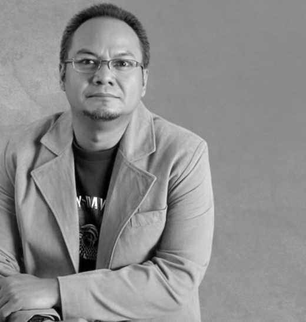

Bang Nevgo adalah founder dan pengajar utama Nevgo Institute, rumah belajar Law of Assumption berbasis ajaran Neville Goddard di Indonesia.
Belajar memahami self-concept, state, assumption, dan imagination secara sederhana dan menerapkannya secara konkret dalam kehidupan.

Banyak orang mengenal manifestation sebagai kumpulan teknik: affirmation, visualization, scripting, SATS, dan berbagai metode lainnya.
Tapi inti ajaran Neville Goddard bukan sekadar teknik. Di sinilah Bang Nevgo memulai pengajarannya: mengajakmu bertanya kepada tempat kamu berdiri di dalam batin.
Bang Nevgo dikenal melalui pengajaran dan kontennya mengenai Law of Assumption, Neville Goddard, self-concept, state, imagination, dan manifestation.
Namun tujuannya bukan sekadar membuat lebih banyak konten. Semakin banyak orang belajar, semakin jelas bahwa yang dibutuhkan bukan hanya potongan tips dan teknik.
Yang dibutuhkan adalah fondasi: tempat untuk memahami konsep secara utuh, tempat untuk belajar, dan tempat untuk mempraktikkannya. Dari situlah Nevgo Institute dibangun.
Personal brand Bang Nevgo memperkuat kredibilitas Institute, dan otoritas Institute memperkuat Bang Nevgo. Keduanya tidak berjalan terpisah.
Pendekatan Bang Nevgo dibangun di atas 3 prinsip terintegrasi yang mengubah ajaran menjadi pemahaman, dan pemahaman menjadi perubahan nyata.
Bukan sekadar menghafal istilah Neville Goddard. Pahami apa sebenarnya yang dimaksud dengan state, assumption, self-concept, dan imagination dari akarnya.
Bawa konsep tersebut ke ranah konkret: relationship, money, career, confidence, self-worth, dan dinamika kehidupan sehari-hari tanpa kebingungan.
Tujuan akhirnya bukan terus-menerus mencoba manifestasi. Tujuannya adalah membuat state dan asumsi baru menjadi semakin natural sebagai dirimu.
Materi pembelajaran terstruktur di Nevgo Institute untuk membangun kesadaran batin yang mandiri dan kokoh.
Memahami bagaimana asumsi yang diterima sebagai benar berhubungan dengan pengalaman hidup seseorang.
Memahami gagasan dan prinsip utama yang menjadi fondasi pembelajaran Nevgo Institute.
Mengenali asumsi mengenai diri sendiri, nilai diri, identitas, dan apa yang dianggap mungkin.
Memahami kondisi kesadaran dan identitas yang sedang ditempati seseorang.
Memahami peran imagination dalam perubahan state dan asumsi.
Pendekatan Bang Nevgo tidak dimulai dari: “Teknik apa lagi yang harus saya lakukan?”, tetapi dari pertanyaan yang jauh lebih fundamental di dalam kesadaranmu.
Rumah Belajar Law of Assumption & Neville Goddard di Indonesia
Nevgo Institute adalah rumah belajar Law of Assumption berbasis ajaran Neville Goddard di Indonesia yang didirikan dan dipandu oleh Bang Nevgo. Di Nevgo Institute, kamu dapat mempelajari berbagai konsep sebagai satu sistem yang saling berhubungan:
Bukan kumpulan teknik yang terpisah. Tetapi sebuah cara baru memahami diri dan pengalaman hidup.
Kenali Nevgo Institute →Jangan mulai dari seratus teknik. Mulai dari fondasinya.
Kenali sumber pemikiran di balik banyak konsep yang akan kamu pelajari.
Mulai melihat hubungan antara identitas, asumsi, dan pengalaman hidup.
Kalau kamu siap memahami Law of Assumption lebih dalam, jangan mulai dengan mengejar lebih banyak teknik. Mulai dengan memahami hukumnya. Kemudian pahami dirimu. Lalu praktikkan.
Rumah Belajar Law of Assumption & Neville Goddard di Indonesia